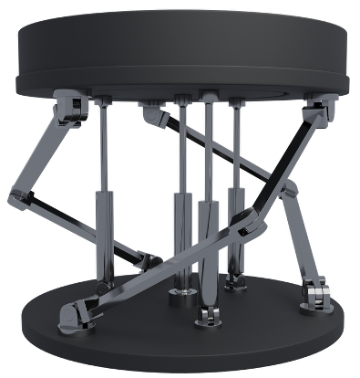
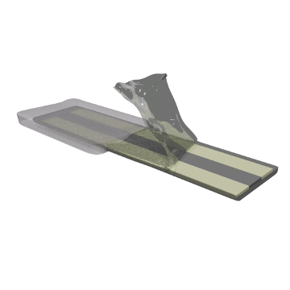

Hydro-Softening: A Bio-Inspired Narrative
A bio-inspired platform translating hydration-mediated softening into engineered material systems.
View projectMy name is Hojin, and I am at Georgia Tech. I am focused on bridging soft matter science with pressing biomedical needs through our flagship hydro-softened materials. Hydro-softening is a bio-inspired mechanical softening effect driven by the spatial organization of water within free volume domains, enabled by directional steric confinement. Prior to hydro-softening, I worked on robotics systems, wearable systems, and more. This online portfolio showcases my most recent publications.
A bio-inspired platform translating hydration-mediated softening into engineered material systems.
View project
Extending hydro-softening from its fundamental mechanism toward practical material applications.
View project
How hydro-softened chitosan changes interfacial mechanics, surface energy, and cell adhesion.
View project
Quasi-static modeling and finite-element validation of a tendon-driven robotic unit for transoral surgery.
View project
An origami-inspired parallel mechanism for lightweight, passively rotating upper-limb prosthetic wrists.
View project
Flexible and stretchable sensing systems for continuous physiological monitoring.
View project
ACS Fall Meeting, Chicago, USA.
IEEE EMBC 2021
This project introduces a parallel mechanism for upper-limb prosthetic wrists. Our offset Kresling-origami-inspired structure generates rotational wrist motion passively, reducing the number of actuators.
In this work, we employed screw theory to derive both its forward and inverse kinematics. The system achieves quasi-spherical mobility while remaining lightweight and tendon-driven, ideal for amputees with trans-radial loss.
This work was done under Prof. Woon-Hong Yeo’s supervision as part of the I2P coursework during my 2nd year as an undergraduate student.
For more information, please refer to our peer-reviewed proceedings article.


ACS Applied Electronic Materials 2022
Under Prof. Woon-Hong Yeo’s supervision, I worked on various flexible and stretchable sensing systems for physiological monitoring. These projects include intracranial pressure sensing system, sweat-and-microfluidics-based ion selective sensing system, and wearable electromyogram (EMG) system.
In this highlighted work, we developed a flexible two-lead ECG sensing system, incorporating a breathable elastomer, designed for extended wear.
For more information, please refer to our article.

